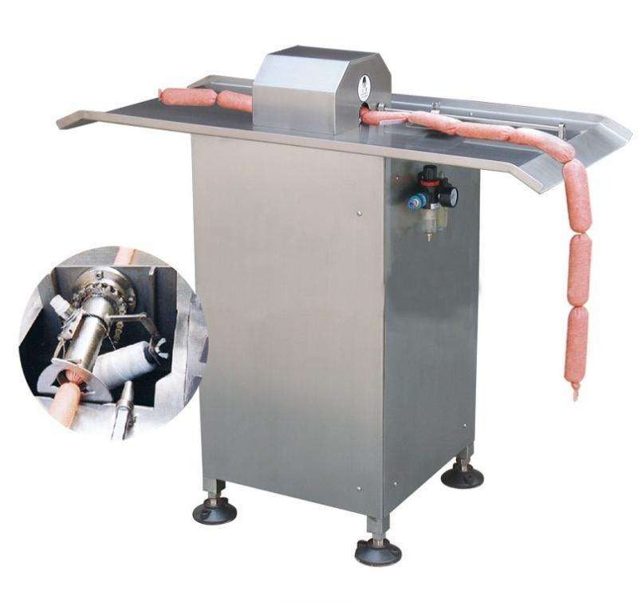

设计模式：代码经验的总结
设计模式都是面向对象的
工厂模式

原料 ---> 加工 ---> 产品
猪肉 ---> 加工 ---> 香肠
this ---> 加工 ---> 对象
js中的工厂模式就是用来批量生产对象的
工厂函数就是做一个对象创建的封装，并将创建的对象return出去
function newObj(name,age){
var o = new Object();
o.name = name;
o.age = age;
return o;
}
var obj = newObj();
单例模式：只允许存在一个实例的模式
var Instance = (function(){
var obj;
return function(){
if(obj === undefined) obj = new Date();
return obj;
}
})();
var ibs = Instance();
观察者模式
又称发布订阅者模式，经典案例：事件监听，一个元素同时监听多个同类型事件，元素对象即为发布者，每一个事件处理函数即为订阅者。
策略模式
策略模式的定义是：定义一系列的算法，把它们一个个封装起来，并且使它们可以相互替换，从而避免很多if语句，曾经学过最简单的策略模式雏形就是使用数组的方式解决传入数字得到对应星期几问题的算法。
比如公司的年终奖是根据员工的工资和绩效来考核的，绩效为A的人，年终奖为工资的4倍，绩效为B的人，年终奖为工资的3倍，绩效为C的人，年终奖为工资的2倍
var obj = {
"A": function(salary) {
return salary * 4;
},
"B" : function(salary) {
return salary * 3;
},
"C" : function(salary) {
return salary * 2;
}
};
var calculateBouns =function(level,salary) {
return obj[level](salary);
};
console.log(calculateBouns('A',10000)); // 40000
代理模式
代理模式（Proxy），为其他对象提供一种代理以控制对这个对象的访问，为了不暴露执行对象的部分代码
//三个对象
//用户委托快捷方式打开exe
//为了不暴露执行对象的部分代码
//男孩委托快递小哥给女孩送礼物
var girl = function(name){
this.name = name;
}
//隐藏复杂，不愿意修改的的方法
var boy = function(girl){
this.girl = girl;
this.send = function(gift){
alert("你好："+this.girl.name+",给你一个"+gift);
}
}
var proxyBro = function(girl){
this.send = function(gift){
new boy(girl).send(gift);
}
}
var pro = new proxyBro(new girl("Lisa"));
pro.send("么么哒");
pro.send("玫瑰花");
前端常用设计模式
工厂模式
抽象工厂模式
单例模式
适配器模式
组合模式
代理模式
观察者模式
策略模式
MVC 模式